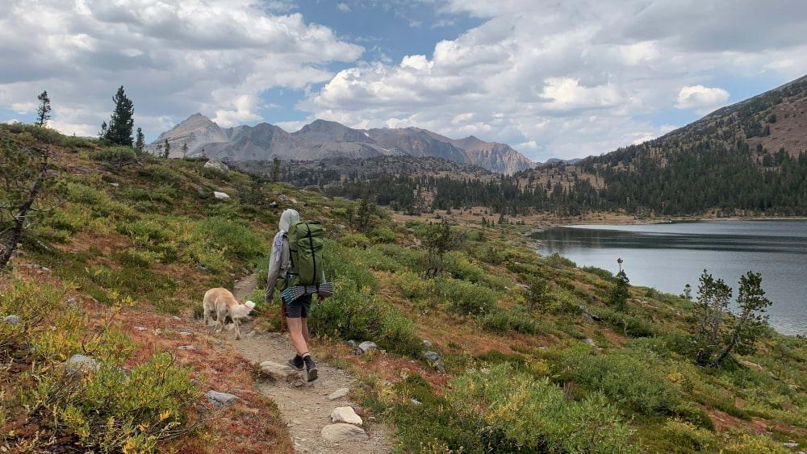
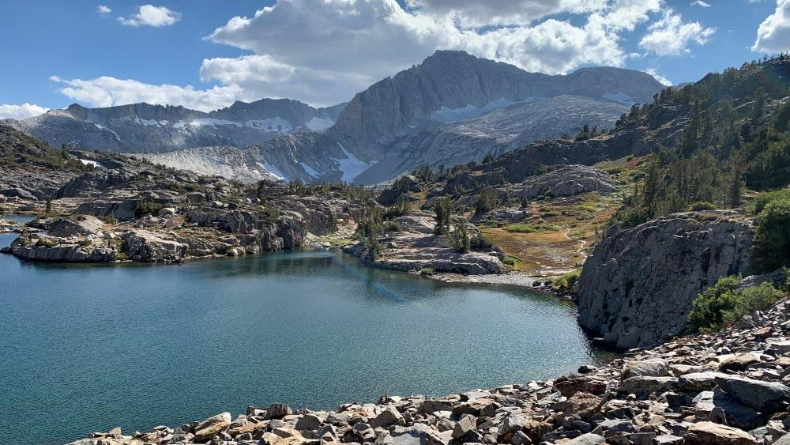
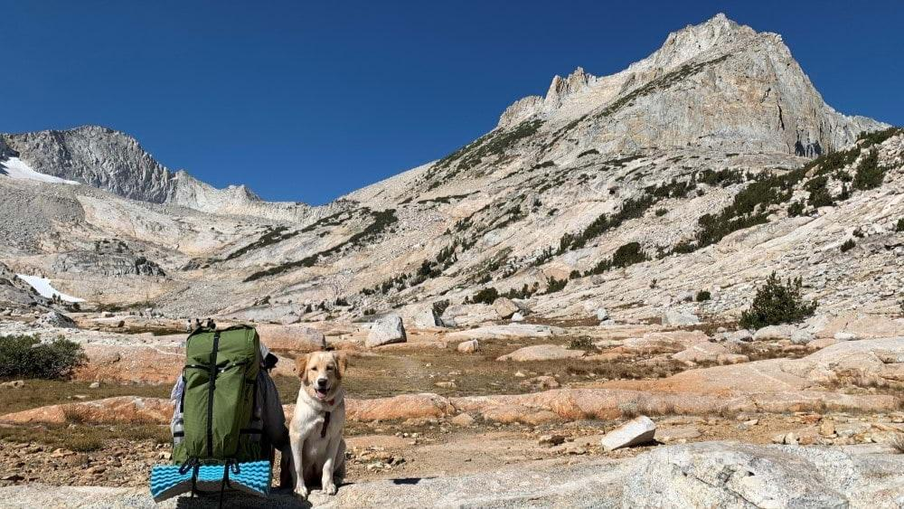
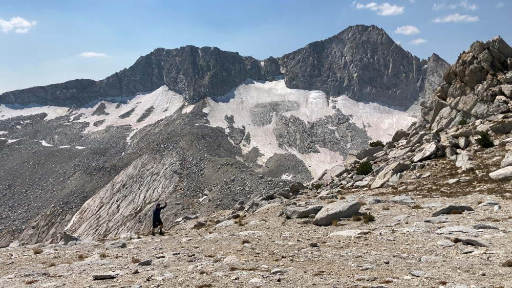
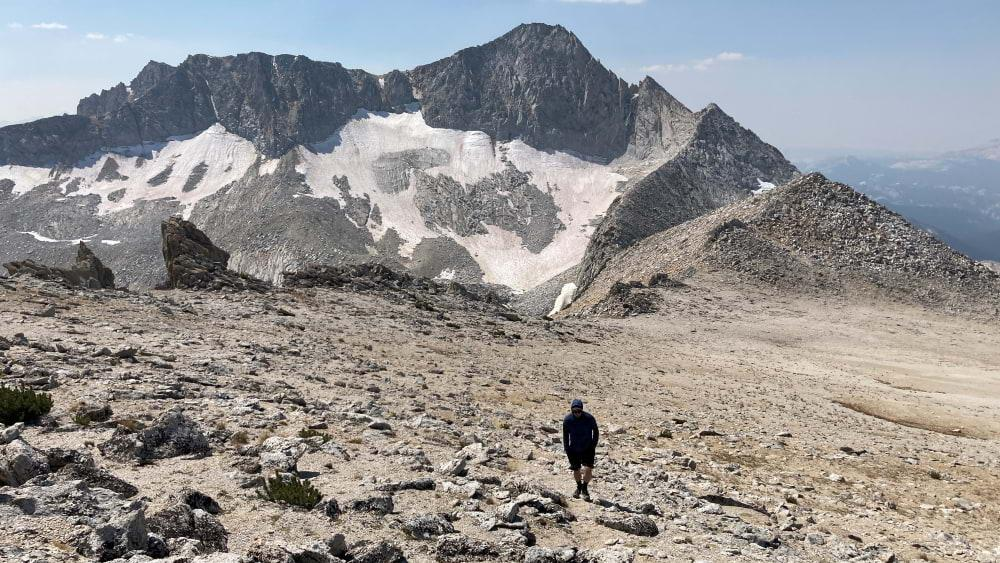
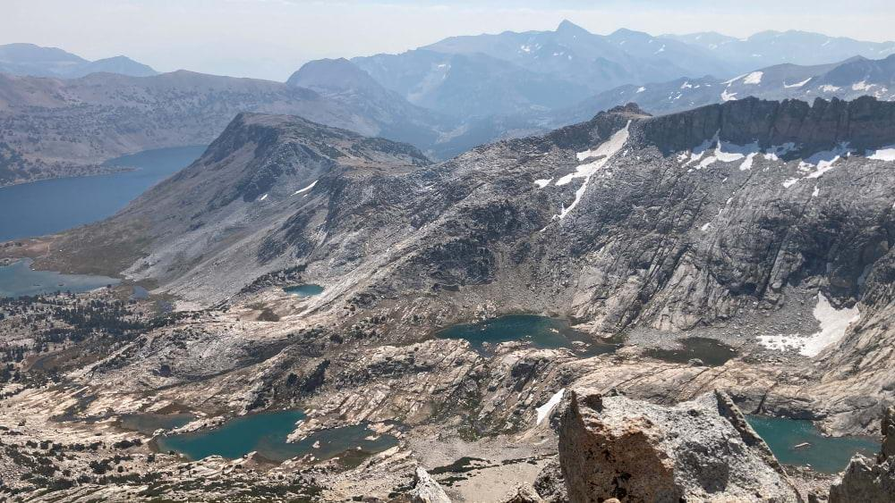
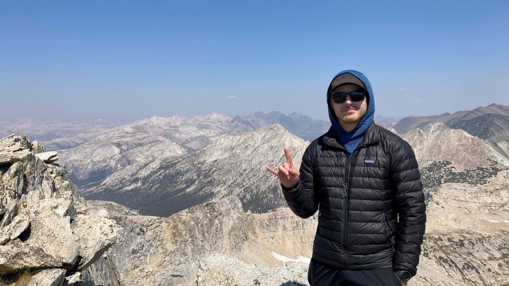
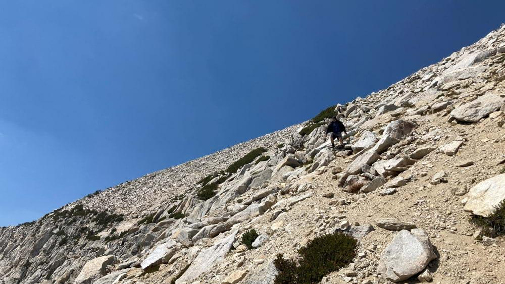
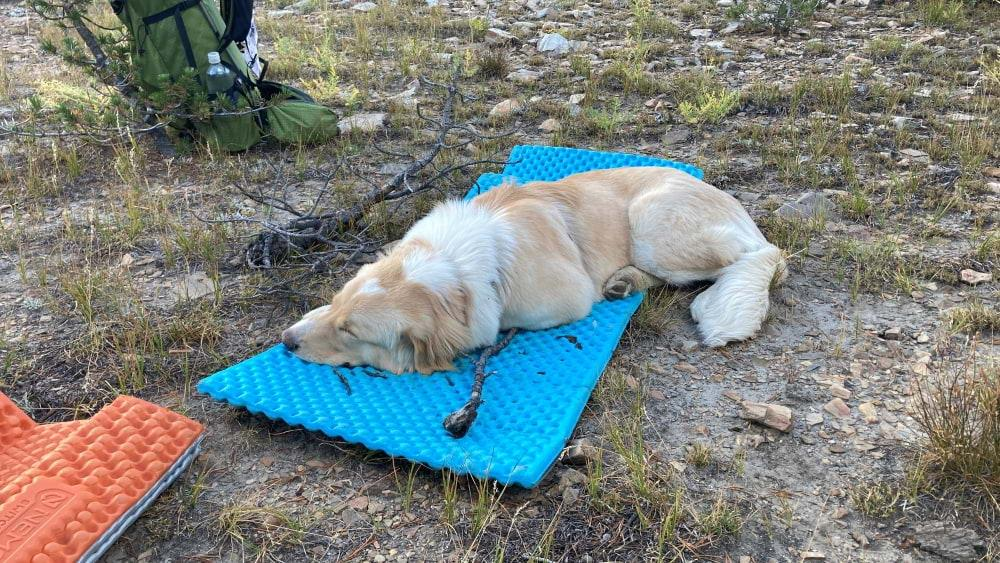

Trip Report: North Peak
Over Labor Day weekend, we took Val on her first backpacking trip around Saddlebag Lake. Over 3 days, we hiked up to Conness Lakes as well as the main loop in the 20 Lakes Basin. Val crushed it!

Contouring around Saddlebag Lake. Val did a great job loose-leash hiking all weekend.

This picture is actually from later in the weekend, but it's a pretty view back toward North Peak.
On Sunday (Day 2), I did a little side mission to bag North Peak. We reached the lowest Conness Lake (10543 on the USFS 2016 map) around 10:30. I left my bear can and some other unneeded weight with the part of the crew that was staying behind with the doggo, then set off toward the summit.

Valley Girl scouts the route to the summit. North Peak is the high point on the right.
The ascent was easy Class 2, mostly just loose, leg-burning scree. There were use paths the entire way.
We were surprisingly quick to the ridge, and there were no false summits on our way to the top. We topped out around 11:45.

My friend Cole gaining the ridgeline with Conness Glacier in the background.

Cole walking the last quarter mile to the summit with Mount Conness behind.
We didn't linger, as winds were blowing and lunch was back down with the rest of our crew. Some quick pictures then we charged back down the mountain.

Beautiful views down toward the Conness Lakes (center) and Saddlebag Lake (far left, cut off).

Cole at the summit.
We were back at the lower Conness Lake just after 12:30, legs successfully worked and appetite stirred.

Cole descending the scree field from the ridgeline back to the upper-most Conness Lake.
The rest of the weekend was a leisurely stroll around the basin. We were out early enough on Labor Day to eat breakfast in Lee Vining and get back to Reno by midday.

Bonus pup pic: Val was exhausted by the weekend's end.